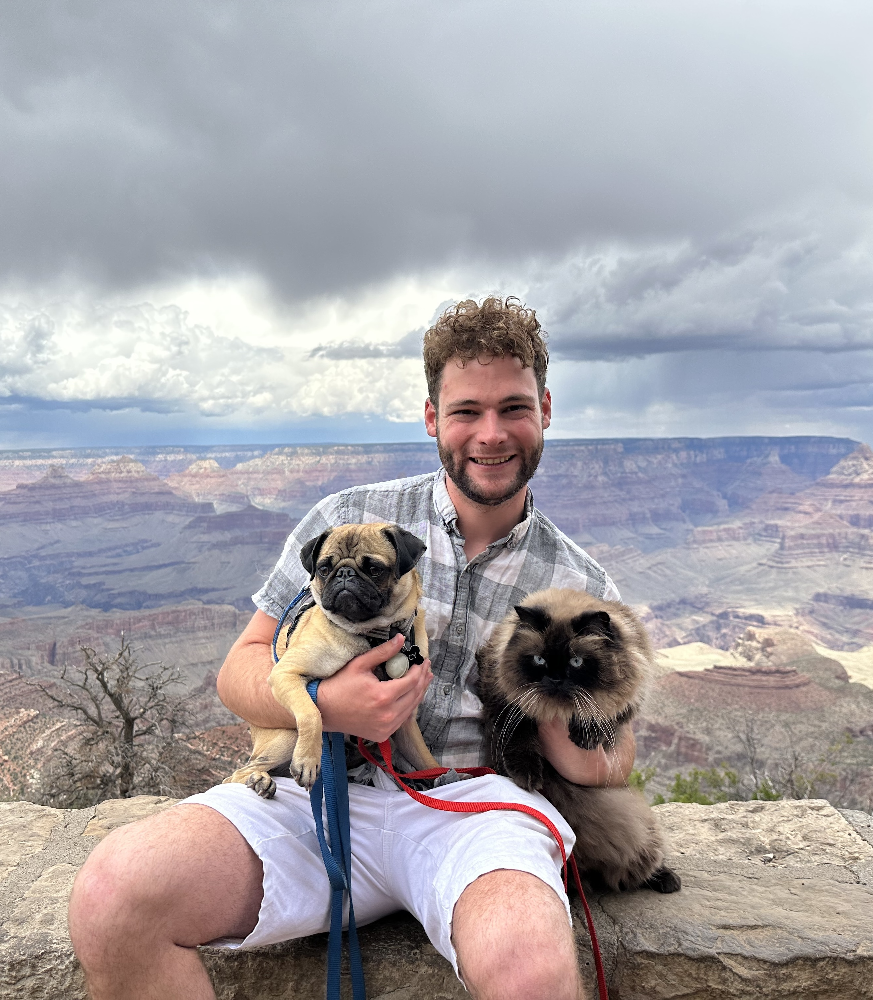
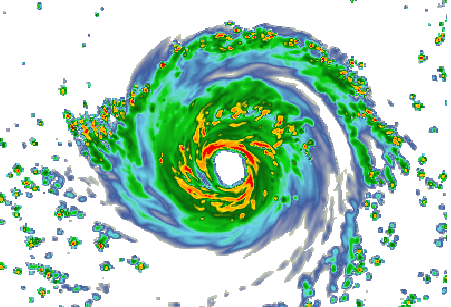
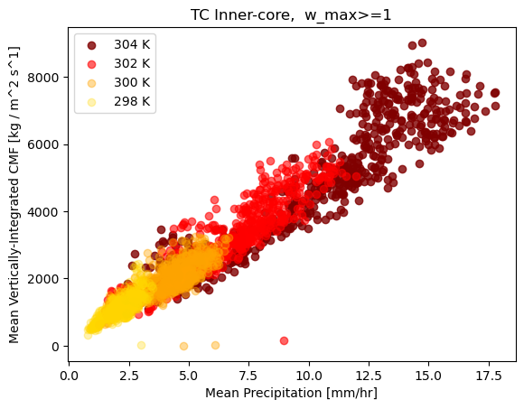
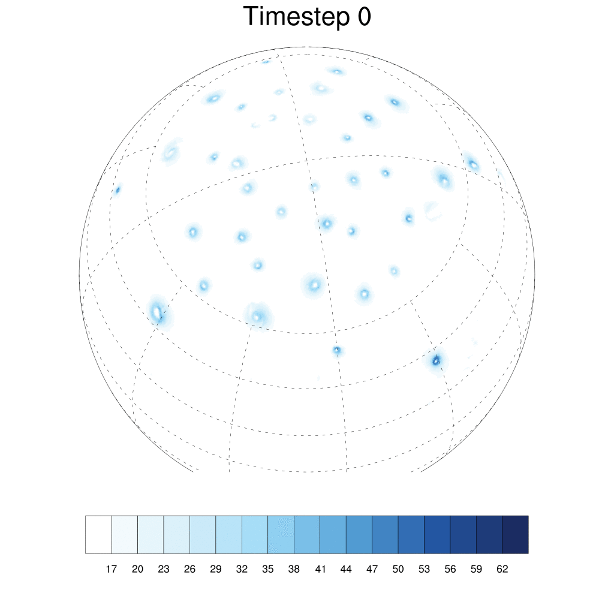

Invited seminar at NSF NCAR RAL
Alyssa gave an invited talk entitled “Investigating Precipitation Processes over CONUS with Objective Storm Tracking.”
Watch the seminar →Department of Atmospheric Sciences · University of Utah
Alyssa gave an invited talk entitled “Investigating Precipitation Processes over CONUS with Objective Storm Tracking.”
Watch the seminar →“Contribution of Tropical Cyclones to Hourly Precipitation Extremes in the Contiguous United States.”
Read the paper →“Quantifying Tropical Cyclone Vertical Mass Flux and Its Relationship to Precipitation Structures Under Varying Sea Surface Temperatures.”
Read the paper →Alyssa is a tenure-track assistant professor in the Department of Atmospheric Sciences and a Wilkes Center for Climate Science & Policy Fellow at the University of Utah. Previously, she was an NSF AGS Postdoctoral Research Fellow at Colorado State University. She graduated with her PhD in Atmospheric Science from Stony Brook University in May 2022 and with a BS in Meteorology from Rutgers University in May 2017. Her research group focuses on combining advanced atmospheric modeling and observations to better understand how extreme weather and its impacts are influenced by the large-scale climate. In her free time, she enjoys skiing at the awesome resorts in Utah, hiking, doing yoga, and reading.
Qien is a PhD student in the Department of Atmospheric Sciences at the University of Utah. His research interests include high-impact weather and climate events, storm tracking, and weather predictions. Beyond academia, he has sought to bridge the gap between scientific research and public understanding. He also enjoys traveling, sports, singing, and cooking.

Zachary is a first-year master’s student in atmospheric science at the University of Utah. His research is primarily focused on understanding precipitation processes in complex terrain, and he is very excited to be involved in the SNOWSCAPE project. In his free time, he loves to ski, hike, travel, and spend time with his pets Percy the Pug and Everest the Cat.

Extreme weather events are impacted by both anthropogenic climate change and natural climate variability. In turn, the occurrence of extreme weather helps determine Earth’s climate through upscale effects on the global energy and hydrologic cycles. Motivated by both the positive and negative impacts of extreme weather on society and ecosystems, my research group studies the statistics of extreme weather, explores how these events fit into the global climate system, and projects how extreme weather will change in the future. My recent work on this topic has focused on how tropical cyclones and their precipitation are influenced by climate change, but I’m interested in all types of extreme weather.

My research group approaches studying precipitation through the different storm systems that produce it, such as tropical cyclones, mesoscale convective systems, atmospheric rivers, and extratropical storms. Through the integration of atmospheric models, reanalysis, and observations, we will build a process-based understanding of storms and their precipitation. This increased understanding can help answer questions like why some storms produce extreme precipitation while others do not and how storms and their resulting precipitation are impacted by natural climate variability and anthropogenic climate change.

Research at the climate-weather interface requires models that can connect the large-scale climate system with mesoscale systems. My research group uses earth system models ranging from global climate models run with approximately 100 km grid spacing to simulations of individual weather events with grid spacing of approximately 1 km. These models across scales, in combination with idealized modeling, facilitate a more complete understanding of the relationship between climate and weather. In addition to atmospheric models, I’m interested in exploring hydrologic modeling with the goals of studying flooding from extreme precipitation events and improving the coupling between atmospheric and hydrologic models.
Underlined names are students I’ve advised or co-advised.
Interested in working as an undergraduate, graduate, or postdoctoral researcher in our group?
Email Alyssa